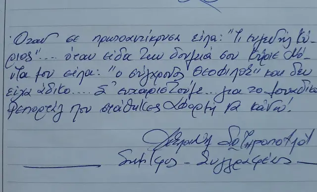
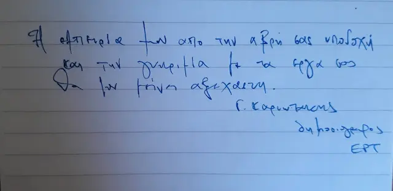
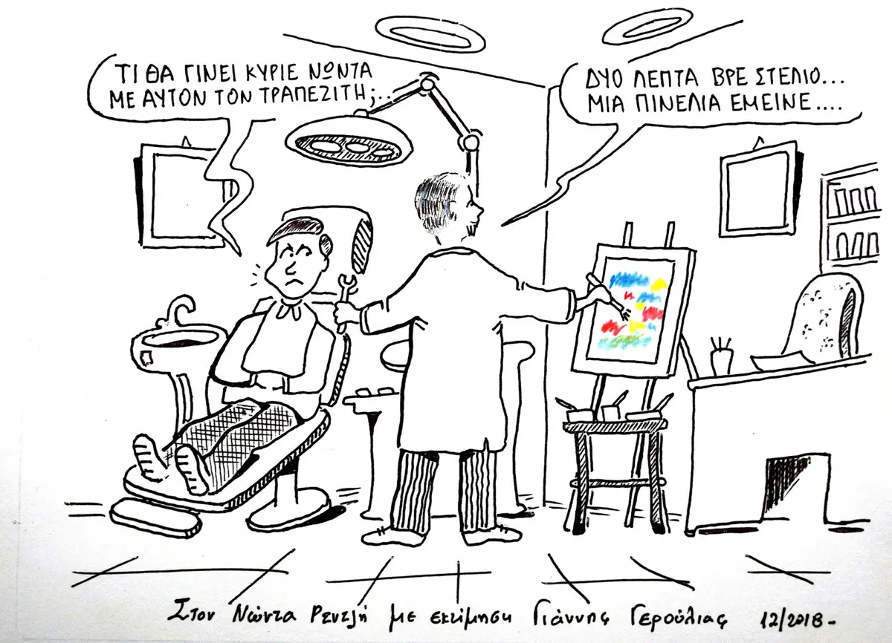

ΒΙΟΓΡΑΦΙΚΟ ΝΩΝΤΑ ΡΕΝΤΖΗ
Ο Νώντας Ρεντζής γεννήθηκε το 1939 στον Δρυμώνα Τριχωνίδας και έζησε τα παιδικά του χρόνια μέσα στη δίνη της κοινής τραγικής μοίρας. Τελείωσε το Γυμνάσιο στο Μεσολόγγι, σπούδασε στην Οδοντιατρική Σχολή του Πανεπιστημίου Αθηνών και εργάστηκε στην Ηλιούπολη Αττικής. Έλαβε μέρος στους πολιτικούς και κοινωνικούς αγώνες της γενιάς του.
"Τα τελευταία χρόνια ζωγραφίζει σε μια προσπάθεια εξομολόγησης εκ βαθέων, έκφρασης και επικοινωνίας". Είναι μέλος του Επιμελητηρίου Εικαστικών Τεχνών Ελλάδος. Έχει πραγματοποιήσει 35 ατομικές εκθέσεις και έλαβε μέρος σε περισσότερες από 450 ομαδικές στην Ελλάδα και το εξωτερικό. Έργα του βρίσκονται σε ιδιωτικές συλλογές, σε Δημόσιες Πινακοθήκες και Μουσεία εντός και εκτός της χώρας.
Nontas Rentzis was born in 1939 in the Greek village Drymonas Trixonidos and lived his childhood during the climax of the common tragic fate of Greek people. After finishing high-school in Messologhi he studied dentistry. He participates actively in the political and social struggles of his generation. He started painting during the last years as a self-educated painter.
In his work is making an effort to express pictures of a past era, which is lost but is deeply impressed by his mind. Through this effort is trying to essential communicate with current audiences. He is a member of Chamber of Fine Arts of Greece. Up to date has made 35 personal exhibitions and has participated in more than 450 group ones in Greece and abroad. His paintings are in private collections, in public galleries and museums inside and outside the country.
Ατομικές εκθέσεις του Νώντα Ρεντζή
- 1) Αύγουστος 2009 Δρυμώνα-Τριχωνίδας ΘΕΜΑ: "Μνήμες – Συναισθήματα – Χρώματα"
- 2) Αύγουστος 2010 18/8 – 25/8/2010 Ναύπακτος, Αίθουσα Ναυπακτία στο Λιμάνι ΘΕΜΑ: "Περί όνου σκιάς" Διαβάστε περισσότερα...
- 3) Αύγουστος 2011 20/8 – 27/8/2011 Θέρμο Αιτωλοακαρνανίας, Αίθουσα Δημοτικής Βιβλιοθήκης ΘΕΜΑ: "Περί όνου σκιάς" Διαβάστε περισσότερα...
- 4) Μάιος 2012 3/5 – 7/5/2012 Μουσείο Εθνικής Αντίστασης, Ηλιούπολη ΘΕΜΑ: "Περί όνου σκιάς" Διαβάστε περισσότερα...
- 5) Δεκέμβριος 2012 3/12 – 10/12/2012 Γκαλερί Αρτ - Κολωνάκι ΘΕΜΑ: "Περί όνου σκιάς" Διαβάστε περισσότερα...
- 6) Ιούνιος 2013 20/6 – 30/6/2013 Άλιμος ΘΕΜΑ: "Περί όνου σκιάς" Διαβάστε περισσότερα...
- 7) Νοέμβριος 2013 4/11 – 13 /11/2013 Περιστέρι Αττικής, Αίθουσα εκδηλώσεων του Δήμου ΘΕΜΑ: "Μόχθος και ξεκούραση" Διαβάστε περισσότερα...
- 8) Σεπτέμβριος 2014 20/9 – 28/9/2014 Δημοτική Πινακοθήκη Πειραιά ΘΕΜΑ: "Βιοπάλη και Μεράκι" Διαβάστε περισσότερα...
- 9) Οκτώβριος – Νοέμβριος 2014 26/10 – 31/11/2014 Καλλιάνι Αρκαδίας, Αίθουσα Δημοτικού Σχολείου ΘΕΜΑ: "Μόχθος και ξεκούραση" Διαβάστε περισσότερα...
- 10) Μάιος 2016 7/5 – 31/5/2016 Ιστορικό μουσείο Ύδρας ΘΕΜΑ: "Ταξίδι στο χρόνο" Διαβάστε περισσότερα...
- 11) Οκτώβριος 2016 12/10 – 31/10/2016 Μουσείο της Πόλης των Αθηνών ΘΕΜΑ: " Η ζωή στην Αθήνα που άλλαξε" Διαβάστε περισσότερα...
- 12) Μάρτης – Απρίλης 2017 21/3 – 30/4/2017 Παλιά Δημοτική Αγορά Αγρινίου ΘΕΜΑ: " Ταξίδι στο χρόνο" Διαβάστε περισσότερα...
- 13) Αύγουστος – Σεπτέμβριος 2017 5/8 – 10/9/2017 Στεμνίτσα Αρκαδίας ΘΕΜΑ: " Ταξίδι στον χρόνο" Διαβάστε περισσότερα...
- 14) Αύγουστος 2017 18/8 – 26/8/2017 Θέρμο Αιτωλοακαρνανίας, Αίθριο Δημοτικού Μεγάρου ΘΕΜΑ: "Ταξίδι στον χρόνο" Διαβάστε περισσότερα...
- 15) Μάρτης – Απρίλης 2018 17/3 – 29/4/2018 Χαλκίδα, Αίθουσα ‘Δημήτρης Μυταράς’ ΘΕΜA: "Γέφυρα στον χρόνο" Διαβάστε περισσότερα...
- 16) Αύγουστος 2018 24/8 – 26/8/2018 Θέρμο Αιτωλοακαρνανίας, Αίθρια Δημοτικού Μεγάρου ΘΕΜΑ: "Ταξίδι στον χρόνο" Διαβάστε περισσότερα...
- 17) Οκτώβριος 2018 3/10 – 28/10/2018 Μουσείο της Πόλης των Αθηνών ΘΕΜA: "Η Ελλάδα της ελπίδας και του Μόχθου" Διαβάστε περισσότερα...
- 18) Απρίλης 2019 12/4 – 14/4/2019 Στάδιο Ειρήνης και Φιλίας με θέμα Ραντεβού της Αυτοδιοίκησης με τον πολιτισμό ΘΕΜA: "Η Ελλάδα της ελπίδας και του Μόχθου" Διαβάστε περισσότερα...
- 19) 16 - 26 Ιουνίου 2021 στο Τρικούπειο Πολιτιστικό κέντρο της Ιεράς Πόλεως Μεσολογγίου. ΘΕΜΑ: "Ελπίδα και αγώνας και οι Ελληνίδες στα άρματα" Διαβάστε περισσότερα...
- 20) 8 Σεπτεμβρίου - 20 Οκτωβρίου στο Μουσείο της Πόλεως των Αθηνών (Πλατεία Κλαυθμώνος). ΘΕΜΑ : "1821 Εθνική Παλιγγενεσία" Διαβάστε περισσότερα...
- 21) 23 οκτωβριου - 3 νοεμβρίου στο Μουσείο της Εθνικής Αντίστασης Ηλιούπολη Αττικής ΘΕΜΑ : "Ελπίδα και αγώνας" Διαβάστε περισσότερα...
- 22) 4 - 15 Νοεμβρίου στο Μουσείο της Εθνικής Αντίστασης Ηλιούπολη Αττικής ΘΕΜΑ : "Οι Ελληνίδες στα άρματα" Διαβάστε περισσότερα...
- 23) Νοέμβρη 2021 από 27-11 έως 30-11 στο Βουλευτικό Ναυπλίου ΘΕΜΑ : "199 χρόνια απο την απελευθέρωση του Ναυπλίου" Διαβάστε περισσότερα...
- 24) Μάρτης-Απρίλης 2022 απο 19-3 έως 3-4 εκθεσιακό κέντρο Δήμου Ηλιούπολης ΘΕΜΑ : "Ελληνική Επανάσταση" Διαβάστε περισσότερα...
- 25) Μάρτης-Μάιος 2022 από 29-3 έως 20-5 2022 στην πινακοθήκη Λέφα Δήμου Φιλοθέης Ψυχικού ΘΕΜΑ : "Επανάσταση 1821" Διαβάστε περισσότερα...
- 26) Οκτώβριος - Νοέμβριος 2022 από 25-10 έως 2-11 2022 στο Δήμο Κορυδαλλού ΘΕΜΑ : "Το έπος του 40" Διαβάστε περισσότερα...
- 27) Ιανουάριος 2023 από 10-1 έως 9-3 2023 στο Εκθεσιακό Κέντρο Ηλιούπολης ΘΕΜΑ : «ΤΑ ΕΥΛΟΓΗΜΕΝΑ» - ΑΡΤΟΣ - ΟΙΝΟΣ - ΕΛΑΙΟΝ Διαβάστε περισσότερα...
- 28) Από 12 Απριλίου έως 4 Μαΐου του 2023 στο πολεμικό μουσείο Βασιλίσσης Σοφίας & Ριζάρη 2 ΘΕΜΑ : "Εθνική Παλιγγενεσία και οι Ελληνίδες στ' άρματα" Διαβάστε περισσότερα...
- 29) Απο 5 έως 18 Αυγούστου στο λαογραφικό μουσείο Δρυμώνα. ΘΕΜΑ : "Εθνική Παλιγγενεσία και οι Ελληνίδες στ' άρματα" Διαβάστε περισσότερα...
- 30) Από 20 έως 25 Νοεμβρίου του 2023 στο Μουσείο Εθνικής Αντίστασης. Διαβάστε περισσότερα...
- 31) Από 20 Δεκεμβρίου μέχρι 14 Ιανουαρίου 2024 στο Εκθεσιακό κέντρο Ηλιούπολης. Διαβάστε περισσότερα...
- 32) Από 20 Μαρτίου μέχρι 17 Απριλίου 2024 στην Αίθουσα Πολιτισμού του Δήμου Αργούς Μυκηνών Μέγας Αλέξανδρος ΘΕΜΑ: "Εθνική Παλιγγενεσία" Διαβάστε περισσότερα...
- 33) Από από 7 έως 15 Μαΐου 2025 στην αίθουσα εκθέσεων του Φιλολογικού Συλλόγου Παρνασός (3ος όροφος), με θέμα: “Ελπίδα και αγώνας”. Διαβάστε περισσότερα...
- 34) Από από 18 Μαΐου έως 31 Ιουνίου 2025 στο Πολεμικό Μουσείο Ναυπλίου με Θέμα: "Οι αγώνες των Ελλήνων για την Ελευθερία" Διαβάστε Περισσότερα...
- 35) Από 24 Ιανουαρίου έως τέλος Σεπτεμβρίου του 2026 στο Μουσείο Τσιτσάνη στα Τρίκαλα φιλοξενεί την έκθεση με θέμα "ΜΥΘΟΙ ΤΟΥ ΑΙΣΩΠΟΥ" Διαβάστε περισσότερα...
Χειρόγραφες Σημειώσεις


ΤΡΑΠΕΖΙΤΗΣ...ΓΙΑ ΓΕΛΙΑ
